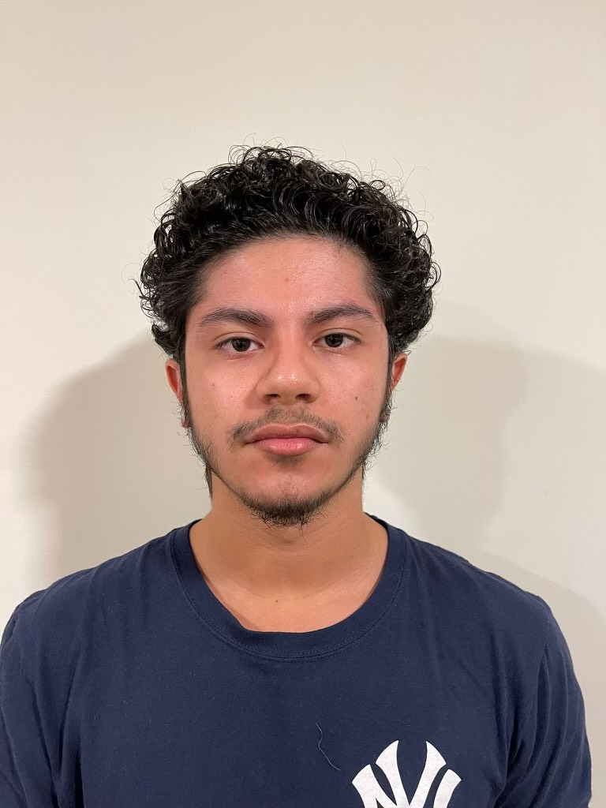

Hello! My name is Josiah Ruiz and I am junior at Penn State Behrend. My major is Digial Media, Arts and Technology with a minor in Marketing. I'm from Edison, New Jersey which is about 25 miles from New York City and 60 miles from Philadelphia.I am of Puerto Rican and Domincan descent as my granparents moved to New York in the 1960's. Most of my family remains in New York, so it is nice when it takes an hour to visit them.
I had a good understanding of adding content to the html. I felt the images were a good addition to my website. After some help, I was able to use the css styling to edit the shaping of the images/ text. One of the struggles I face was taking my website from html to WordPress. I felt more comfortable with creating the website in html as the formatting was easier.


In these screenshots, I am working with John F. Kennedy's Inaugural Address from 1961. It is interesting to note how the words pledge, world, and sides are some of the most frequently used terms in his speech. Kennedy wanted the United States to become unified, esecially during the Civil Rights Movement, which makes sense as to why those are some of the most used words.


In these screenshots I looked at Barack Obama's First Inaugural Address in 2008. Some of his most commonly used words were America, nation, and new. As America's first black president, Obama was the start of a new age. Similar to JFK, he wanted America to become unified while placing an emphasis on our nation.